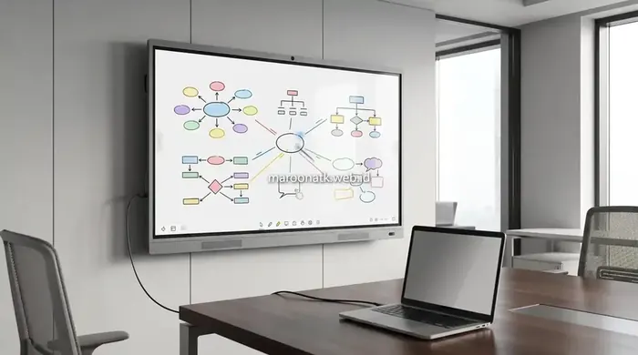

Apa Itu Interactive Flat Panel dalam Konteks Ruang Rapat Modern?
Apa itu interactive flat panel (IFP) adalah perangkat display layar sentuh interaktif pintar beresolusi 4K UHD (3840x2160) yang menggabungkan fungsi televisi, proyektor, papan tulis digital (digital whiteboard), dan komputer kerja dalam satu bodi. Menggunakan teknologi multi-touch 20–40 titik serta sistem operasi Android dan modul PC Windows OPS, IFP dirancang untuk memfasilitasi presentasi interaktif dan kolaborasi hybrid meeting perusahaan.
Dalam era kerja fleksibel dan kolaboratif saat ini, efisiensi waktu pertemuan bisnis menjadi tolok ukur produktivitas korporat. Banyak perusahaan masih mengandalkan proyektor proyektor konvensional yang membutuhkan waktu pemanasan lampu, ruangan yang harus digelapkan, serta kabel proyektor yang sering bermasalah. Mengadopsi teknologi interactive flat panel menjadi solusi modern yang mengubah ruang rapat menjadi pusat kolaborasi dinamis dan efisien.
Berbeda dengan layar monitor pasif, interactive flat panel Maroon ATK memungkinkan peserta rapat menulis ide secara langsung di layar dengan stylus pen atau jari tangan, membagikan tampilan layar laptop tanpa kabel (wireless mirroring), dan merekam seluruh hasil diskusi rapat ke format PDF yang dapat langsung dikirim via email atau dipindai melalui QR Code.

Faktor yang Mempengaruhi Harga Interactive Flat Panel Jakarta Terbaru
Pelajari rincian faktor pembentuk harga IFP ukuran 65, 75, dan 86 inci beserta estimasi anggaran pengadaan B2B.
Perbedaan Mendasar Interactive Flat Panel dengan Televisi Biasa
Sering kali tim pengadaan atau manajemen pemula mengira bahwa memasang TV komersial berukuran besar sudah cukup untuk ruang rapat. Padahal, secara arsitektur teknologi dan fungsionalitas, keduanya sangat berbeda:
- Interaktivitas Layar: TV biasa hanya menerima sinyal video secara pasif tanpa kemampuan sentuh. IFP memiliki sensor infra-merah atau Capacitive Touch berpresisi tinggi dengan respon instan <5 milidetik.
- Ketahanan Fisik & Kaca Layar: Layar TV rentan pecah dan memantulkan silau lampu ruangan (glare). Panel IFP dilapisi 4mm Anti-Glare Tempered Glass 7H yang tahan benturan dan bebas pantulan bayangan lampu.
- Sistem Operasi & Komputasi Mandiri: IFP dibekali dual OS (Android internal dan slot-in OPS Windows) yang mampu membuka file Microsoft Office, PDF, dan aplikasi meeting tanpa wajib menghubungkan laptop eksternal.
- Daya Tahan Operasional (Duty Cycle): Panel komersial IFP dirancang untuk jam operasional panjang 16/7 hingga 24/7 dengan pendingin komponen industri, sedangkan TV rumahan hanya optimal untuk 4–6 jam sehari.
Matriks Komparasi: TV Biasa versus Interactive Flat Panel (IFP)
Berikut adalah tabel perbandingan spesifikasi dan nilai fungsional antara televisi standar dan Interactive Flat Panel untuk kebutuhan ruang rapat:
| Fitur & Kemampuan | TV Biasa (Komersial/Rumahan) | Interactive Flat Panel (IFP) | Manfaat Nyata untuk Ruang Rapat |
|---|---|---|---|
| Touch Screen & Multi-Touch | Tidak ada (Layar pasif) | Ya, 20 hingga 40 Titik Sentuh Simultan | 2–4 peserta dapat menulis dan berdiskusi bersamaan di layar |
| Digital Whiteboard | Tidak tersedia | Aplikasi bawaan lengkap dengan tools bentuk 2D/3D | Menggantikan whiteboard spidol, hasil catatan dapat disimpan digital |
| Wireless Screen Sharing | Terbatas (AirPlay/Chromecast 1 perangkat) | Multi-Split Screen nirkabel (hingga 4–9 layar bersamaan) | Membandingkan laporan finansial antar departemen secara berdampingan |
| Konektivitas Port USB-C | Jarang ada / Hanya untuk USB Flashdisk | Type-C Full-Function (Video 4K + Touch + PD 65W Charging) | Cukup 1 kabel tunggal untuk mirroring, kendali touch, dan charge laptop |
| Integrasi Video Conference | Perlu perangkat video bar eksternal rumit | Kamera 4K auto-tracking & mikrofon array 8-channel internal | Rapat hybrid Zoom / Teams berjalan jernih tanpa kabel berantakan |
| Kaca Pelindung Layar | Kaca tipis memantulkan cahaya lampu (Glossy) | Anti-Glare 7H Tempered Glass (Matte tahan gores) | Teks tetap terbaca jelas meski lampu ruang meeting menyala terang |

Kemudahan fitur wireless presentation dan multi-touch screen pada Interactive Flat Panel memungkinkan tim berkolaborasi secara real-time saat sesi brainstorming internal.

Pengadaan Interactive Flat Panel Sekolah: Transformasi Smart Classroom
Tinjauan pemanfaatan smart board interaktif untuk meningkatkan interaktivitas belajar mengajar di institusi pendidikan.
Manfaat Utama Penerapan IFP Bagi Perusahaan dan Organisasi
Mengintegrasikan Interactive Flat Panel ke dalam infrastruktur ruang kerja membawa beragam keuntungan operasional:
1. Eliminasi Waktu Persiapan dan Kerumitan Kabel (Zero Cable Clutter)
Peserta rapat tidak lagi membuang waktu 10–15 menit hanya untuk mencari konverter HDMI atau menyetel fokus proyektor. Dengan IFP, cukup sentuh tombol daya atau pindai kode nirkabel, presentasi langsung tampil dalam hitungan detik.
2. Optimalisasi Rapat Hybrid (Online & Onsite)
Dengan integrasi kamera sudut lebar dan mikrofon penangkap suara hingga radius 8–10 meter, peserta yang bekerja dari rumah (WFH) atau kantor cabang di luar kota dapat melihat coretan anotasi di layar secara real-time seolah berada di ruangan yang sama.
3. Dokumentasi Notulen Cepat via QR Code
Seluruh coretan ide, diagram alur, dan keputusan rapat tidak perlu difoto dengan ponsel. Presenter cukup menekan tombol "Save & Share", dan sebuah kode QR unik akan muncul di layar untuk dipindai oleh seluruh peserta rapat ke format PDF berkualitas tinggi.

Mengenal Papan Tulis Digital Smart Board: Spesifikasi & Kelebihan
Eksplorasi fitur software papan tulis digital cerdas untuk mendukung produktivitas presentasi kantor.
Faktor Kritis yang Perlu Dipertimbangkan Sebelum Pengadaan IFP
Sebelum memutuskan tipe dan model IFP yang akan dibeli oleh tim procurement, pastikan memeriksa parameter berikut:
- Kesesuaian Ukuran Layar: Ruang rapat kecil (4–8 orang) ideal menggunakan ukuran 65 inci, ruang rapat standar (10–20 orang) menggunakan 75 inci, sedangkan ruang boardroom eksekutif (25+ orang) menggunakan 86 inci.
- Ketersediaan Modul PC OPS: Tentukan apakah meeting memerlukan software komputasi berbasis Windows mandiri (misal AutoCAD, SAP, PowerBI) atau cukup dengan aplikasi Android dasar.
- Opsi Pemasangan (Wall Mount vs Mobile Trolley): Gunakan mobile trolley jika perangkat perlu dipindahkan secara fleksibel antar ruang meeting atau lantai gedung.
- Kredibilitas Vendor B2B: Pastikan penyedia berbadan hukum resmi PT seperti Maroon ATK yang menjamin ketersediaan teknisi perakitan onsite, penerbitan e-Faktur PPN 11%, serta jaminan garansi suku cadang 1–3 tahun.
Modernkan Ruang Rapat Kantor Anda Bersama Maroon ATK
Layanan Uji Coba Demo Unit, SPH Resmi & Garansi Resmi 3 Tahun
Konsultasikan kebutuhan smart interactive board ruang rapat Anda bersama tim spesialis teknologi Maroon ATK. Dapatkan proposal penawaran harga resmi (SPH) terbaik sekarang.
Kesimpulan: Investasi Tepat Sasaran untuk Kolaborasi Masa Depan
Rangkuman Keputusan Procurement
Interactive Flat Panel (IFP) bukan sekadar layar sentuh besar, melainkan fondasi ekosistem ruang rapat modern yang memadukan komputasi, visual 4K, dan interaktivitas tanpa hambatan.
- Beralih dari Display Pasif: Mengganti TV atau proyektor dengan IFP terbukti melipatgandakan interaksi peserta dan efisiensi durasi meeting.
- Pilih Ukuran Proporsional: Sesuaikan dimensi 65", 75", atau 86" dengan kapasitas denah ruang rapat Anda.
- Mitra Pengadaan Resmi: Percayakan pembelian smart board Anda kepada Maroon ATK untuk mendapatkan unit bergaransi resmi, teknisi instalasi internal, dan akuntabilitas perpajakan legal.
Pertanyaan Umum (FAQ) Interactive Flat Panel (IFP)
Televisi biasa hanya berfungsi sebagai display pasif satu arah untuk menampilkan gambar/video. Sebaliknya, Interactive Flat Panel (IFP) adalah perangkat komputer layar sentuh interaktif (multi-touch hingga 40 titik) dengan kaca anti-glare 7H tempered, fitur digital whiteboard bawaan, screen mirroring nirkabel multi-perangkat, serta dukungan sistem operasi ganda Android dan modul PC Windows OPS.
Tidak. IFP merupakan perangkat all-in-one mandiri dengan panel LED beresolusi 4K Ultra HD dan kecerahan tinggi (350–450 nits), sehingga tidak membutuhkan proyektor, lampu ruangan tidak perlu diredupkan, dan bebas dari bayangan tubuh presenter.
Ya, Maroon ATK menyediakan layanan demo unit fisik di kantor klien atau showroom kami di Jakarta, lengkap dengan konsultasi ukuran layar (65, 75, atau 86 inci), instalasi teknisi onsite, penerbitan e-Faktur PPN 11%, dan garansi resmi sparepart 1 hingga 3 tahun.

Arby Ardiansyah
Praktisi pengadaan B2B berpengalaman lebih dari 5 tahun dalam teknologi smart display perkantoran, transformasi digital ruang rapat korporat, dan e-procurement instansi di Indonesia.